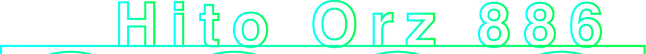
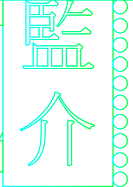
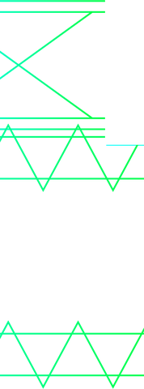
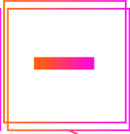
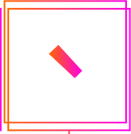
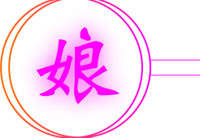
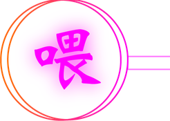
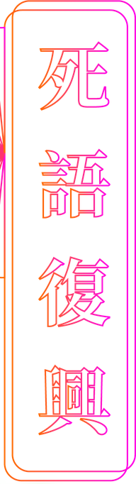
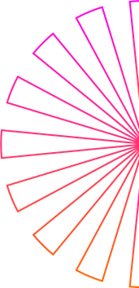
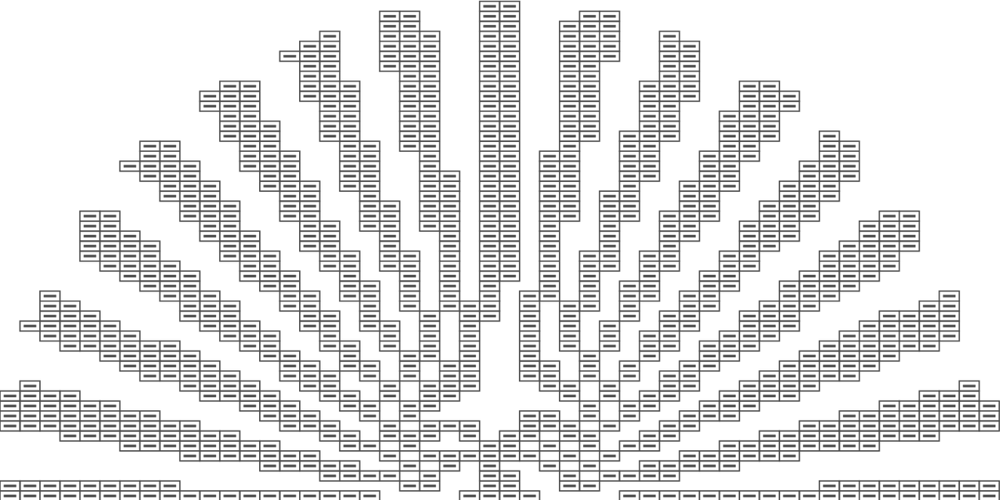
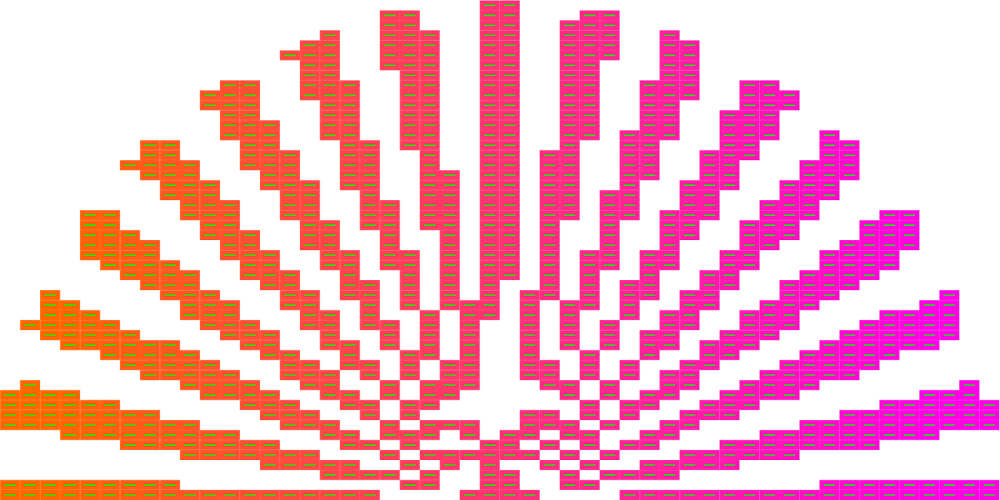
D 死語詞典
C
版權資訊
按空白鍵進入遊戲
死語詞典
▲▼ 滑動 ESC 回首頁
版權資訊
製作
陳弈晴 白彥庭 連緒
使用者介面課程期末作品
字體
教育部隸書（TW-MOE-Li）© 中華民國教育部
採用 創用CC 姓名標示－禁止改作 3.0 臺灣版 授權
歌曲
〈姐姐〉謝金燕 〈我有我的young〉飛輪海
〈愛你〉王心凌
歌曲片段與封面圖片的版權屬原權利人所有
背景音樂
自製
技術
MediaPipe Tasks Vision（Google）
拍照去背與臉部偵測，採用 Apache License 2.0
本網站為課堂作業，僅供教學展示，非營利使用。
ESC 回首頁
～～歡樂一百點～～
按空白鍵繼續
媽抖明星著裝時間
P1

P2

按空白鍵進入拍照倒數
著裝完成
P1
P2
按空白鍵進入下一步
舞台選擇
▲▼ 選擇 空白鍵決定
音樂選擇
▲▼ 選擇 空白鍵決定 ESC上一頁
玩法說明
P1
W
ASD
箭頭落到判定線時
按下對應的 W A S D
P2
↑
←↓→
箭頭落到判定線時
按下對應的方向鍵
LOADING 0%
P1
0
歌曲名稱
0
P2
←
↓
↑
→
←
↓
↑
→
結算
0
0
按空白鍵進入死語詞典